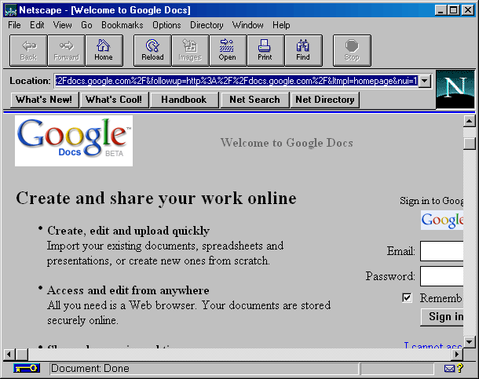
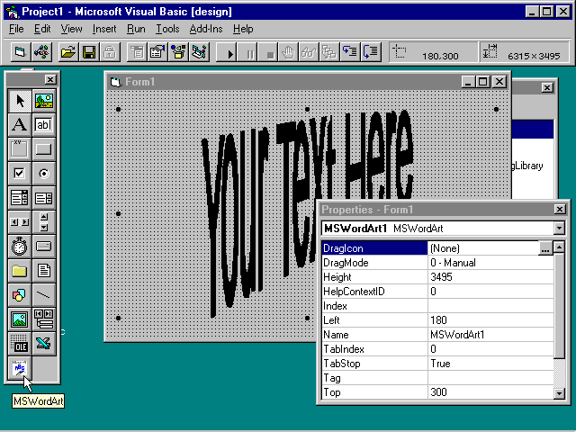
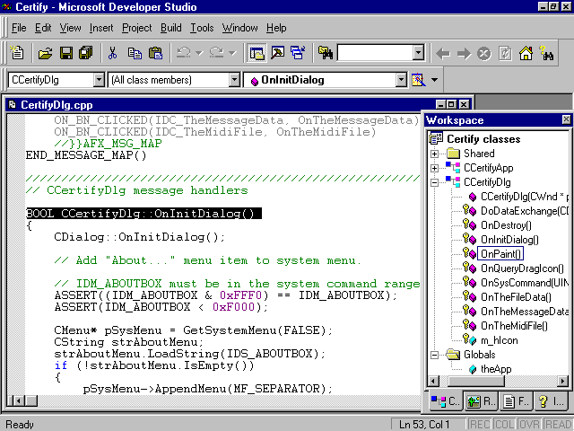
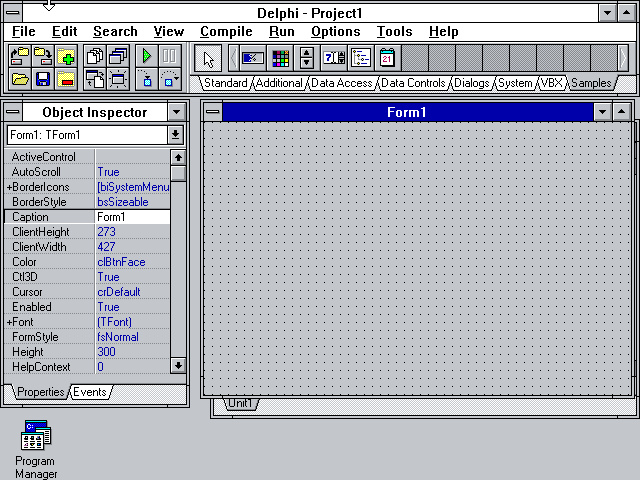
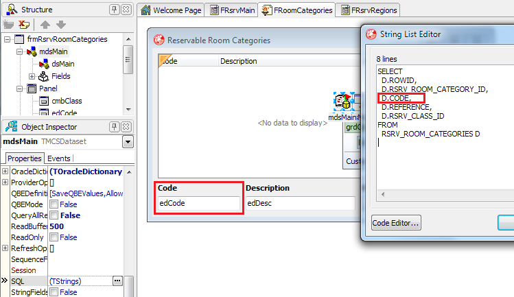
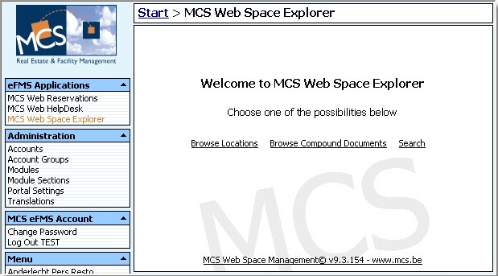
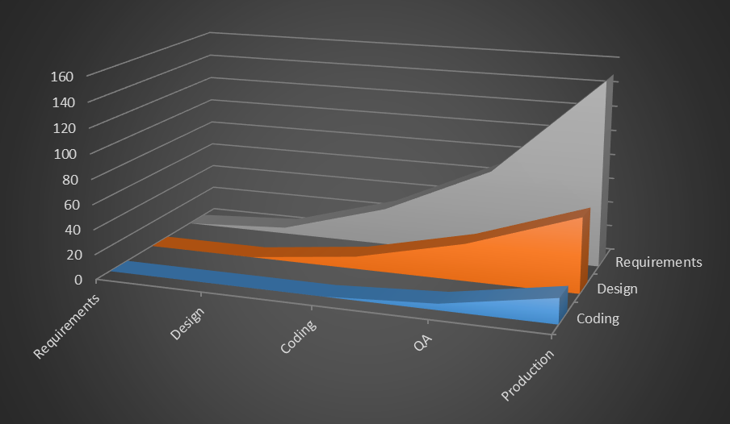
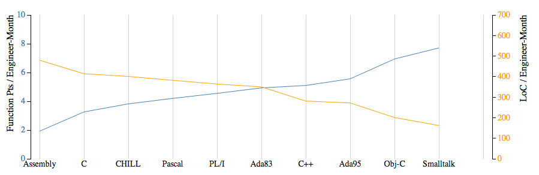

Joeri Sebrechts
js@mcs.fm
10

Microsoft Visual Basic 4.0

Microsoft Visual C++ 4.0

The angular.js of its day
If you need to develop 32-bit solutions for Windows, look no further.
-- Infoworld
Borland Delphi

Every choice is wrong eventually
Old and busted is ok
Old and dead is not
1996: LAN, RAD and client/server

Popular !== Good
Get a lifetime Prozac subscription
-- Frank
Why?
- Warpitecture
- Featurism
- Refuctoring
The natural order of things is disorder
You break it, you bought it
Competency paradox
<? php
PHP today
Laravel
Symfony
Zend
Silex
Phalcon
Cake
Yii
Codeigniter
Composer
Doctrine
Wordpress
Drupal
PHP in 2003
PEAR
Wordpress
Drupal
MCS starts WebPortal project

Choose a platform
| Chose PHP |
| Did a POC |
|
| Chose PHP |
| Designed in Russia |
|
| Chose PHP |
| Made in Romania |
Don't choose an architecture__
| Instead of... | We used... |
|---|
| ajax | iframes |
| models | ociexecute() |
| views | EasyTemplate |
| controllers | procedures |
| libraries | utilities.php |
Every wrong choice will be repeated
An ounce of prevention is worth a pound of cure.
The problem with messes

hiring professionals
specifications | prototyping | hallway user testing
whiteboarding | blueprints | design reviews
style guide | code reviews | linting
automated testing | continuous integration
Choose an architecture, or you will have a poor one
The Cathedral and the Bazaar
|
Choose
|
Compose

|
Minimal Long-lived architecture
- Public interface
- Web view
- Mobile view
- Services
- Private interface
- Persistence interface
2008: towards a new design
- JavaScript web front-end
- Mobile web front-end
- Web services layer
- Internal API (lib.*.php)
- 3rd party libraries
Migration
Refactor or rewrite?
Rewrite plan
Rewrite reality

Refactoring advice
- Understand why
- Document user requirements
- Work in small increments
- Involve the whole team
2015
- 1.000.000
- 1.400.000
- 700.000
- 150.000
Still interesting
- Migrations
- Projects
- Energy
- Big Data
- Mobile CAD